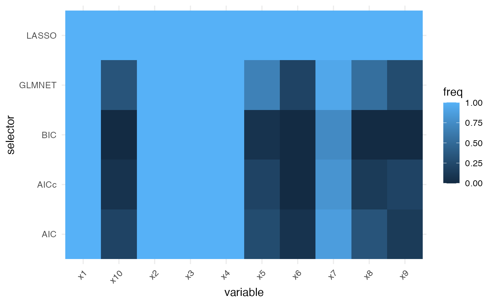

Simulating interval Beta data
Frédéric Bertrand
Cedric, Cnam, Parisfrederic.bertrand@lecnam.net
2025-10-23
Source:vignettes/simulate-interval-beta.Rmd
simulate-interval-beta.RmdOverview
The simulation_DATA.beta() helper produces
beta-regression design matrices paired with either fully observed
responses or interval-censored outcomes. This vignette illustrates a
typical workflow for drawing a single data set with structured
correlation and custom missingness behaviour that mimics practical
survey settings.
We simulate 300 observations with 10 candidate predictors. Four
predictors are truly associated with the response through coefficients
specified in beta_size. Correlation among predictors
follows an AR(1) structure governed by rho, which
conveniently induces near-multicollinearity while remaining
positive-definite.
sim <- simulation_DATA.beta(
n = 300, p = 10, s = 4, beta_size = c(1.0, -0.8, 0.6, -0.5),
corr = "ar1", rho = 0.25,
mechanism = "mixed", mix_prob = 0.5,
delta = function(mu, X) 0.03 + 0.02 * abs(mu - 0.5),
alpha = function(mu, X) 0.1 + 0.05 * (mu < 0.3),
na_rate = 0.1, na_side = "random"
)Interval-generation parameters
The delta and alpha callbacks control how
often the simulated outcome is converted to an interval and how wide
that interval is:
-
delta(mu, X)encodes the expected half-width of the interval around the latent mean responsemu. Here we allow wider intervals when the mean is far from 0.5, highlighting heteroskedastic behaviour. -
alpha(mu, X)represents an observation-specific inflation probability. When the latent mean is below 0.3, the function returns larger values, creating more lower-bound censoring for smallmu.
With mechanism = "mixed" and
mix_prob = 0.5, half of the affected observations receive
two-sided intervals, whereas the remainder experience one-sided
censoring driven by na_side = "random".
Inspecting the simulated outcomes
The output contains the design matrix X, the fully
observed latent response Y, and the interval bounds
Y_low/Y_high. The following summaries check
the distribution of the latent response and the frequency of
interval-censoring.
summary(sim$Y)
#> Min. 1st Qu. Median Mean 3rd Qu. Max.
#> 0.0000517 0.2753408 0.5128178 0.4911643 0.6876537 0.9995677
mean(is.na(sim$Y_low) | is.na(sim$Y_high))
#> [1] 0.1To better understand the resulting intervals we can look at a small
excerpt of the censored rows. Observations with NA on one
side correspond to one-sided censoring events.
Visualising interval widths
The difference between Y_high and Y_low
conveys how much uncertainty each interval carries. When an observation
is fully observed the bounds coincide with Y, leading to a
zero width. The histogram below demonstrates that, even with a modest
base width of 0.03, the adaptive component in delta()
creates a long right tail as the mean moves away from the centre of the
unit interval.
interval_width <- sim$Y_high - sim$Y_low
hist(interval_width, breaks = 30, col = "#0A6AA6", border = "white",
main = "Distribution of simulated interval widths",
xlab = "Y_high - Y_low")
These simulated objects can be passed directly to the modelling
routines in SelectBoost.beta. The following sections
outline how to turn the generated intervals into pseudo-observations for
classical selectors, how to obtain stable frequencies with the
interval-aware fastboost routine, and how to visualise the results side
by side.
Point-response selectors on pseudo-observations
When only interval bounds are observed, a quick way to obtain a point response is to impute either the midpoint or the available bound in case of one-sided censoring. The helper below keeps the midpoint when both bounds are present and falls back to the observed edge otherwise.
pseudo_y <- ifelse(
is.na(sim$Y_low) | is.na(sim$Y_high),
ifelse(is.na(sim$Y_low), sim$Y_high, sim$Y_low),
0.5 * (sim$Y_low + sim$Y_high)
)With this pseudo-response in hand, we can deploy the full suite of
selectors shipped with the package. The
compare_selectors_single() wrapper runs the stepwise
AIC/BIC/AICc procedures, the GAMLSS-based LASSO and the
IRLS/glmnet approach in one call. Setting
include_enet = FALSE ensures the example remains
lightweight even when the optional gamlss.lasso extension
is not installed.
single <- compare_selectors_single(sim$X, pseudo_y, include_enet = FALSE)
head(single$table)
#> selector variable coef selected
#> x1 AIC x1 0.9204344 TRUE
#> x2 AIC x2 -0.7552439 TRUE
#> x3 AIC x3 0.5566513 TRUE
#> x4 AIC x4 -0.4996924 TRUE
#> x5 AIC x5 0.0000000 FALSE
#> x6 AIC x6 0.0000000 FALSEThe bootstrap helper compare_selectors_bootstrap()
repeats this exercise over resampled datasets, providing empirical
selection frequencies for each method.
freq <- compare_selectors_bootstrap(
sim$X, pseudo_y, B = 15, include_enet = FALSE, seed = 321
)
head(freq)
#> selector variable freq
#> x1 AIC x1 1.00000000
#> x2 AIC x2 1.00000000
#> x3 AIC x3 1.00000000
#> x4 AIC x4 1.00000000
#> x5 AIC x5 0.26666667
#> x6 AIC x6 0.06666667Merging both outputs with compare_table() gives a
compact summary containing the per-run coefficients and the associated
bootstrap frequencies.
summary_tab <- compare_table(single$table, freq)
head(summary_tab)
#> selector variable coef selected freq
#> 1 AIC x1 0.9204344 TRUE 1.0000000
#> 2 AIC x10 0.0000000 FALSE 0.2000000
#> 3 AIC x2 -0.7552439 TRUE 1.0000000
#> 4 AIC x3 0.5566513 TRUE 1.0000000
#> 5 AIC x4 -0.4996924 TRUE 1.0000000
#> 6 AIC x5 0.0000000 FALSE 0.2666667Visual comparisons
The package offers quick visualisation helpers that default to base
graphics but automatically use ggplot2 when it is
available. The coefficient heatmap highlights which variables are
selected and their estimated effect sizes across selectors.
plot_compare_coeff(single$table)Selection frequencies from the bootstrap stage can be plotted in the same manner, providing a stability-oriented counterpart to the coefficient map.
plot_compare_freq(freq)
Interval stability selection with
fastboost_interval
Instead of reducing intervals to single values, the
fastboost_interval() routine repeatedly samples
pseudo-responses inside each interval before running the chosen
selector. The resulting selection frequencies account for the
uncertainty carried by the censored observations.
fb <- fastboost_interval(
sim$X, sim$Y_low, sim$Y_high,
func = function(X, y) betareg_glmnet(X, y, choose = "bic", prestandardize = TRUE),
B = 30, seed = 99
)
sort(fb$freq, decreasing = TRUE)[1:5]
#> x1 x2 x3 x4 x8
#> 1.0000000 1.0000000 1.0000000 1.0000000 0.7333333These additions demonstrate how the simulation engine, the collection of selectors, and the fast interval booster interact in a cohesive workflow for interval-valued beta regression problems.